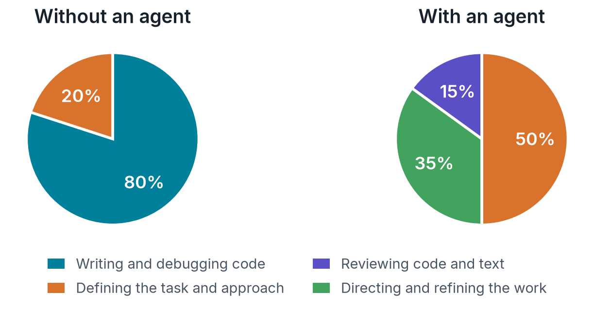

flowchart LR
A["Pick a task"] --> B["Plan first"] --> C["Build small"] --> D{"Done or<br/>switching?"}
D -- "keep going" --> C
D -- "yes" --> E["Write a<br/>handoff note"] --> F["/clear"] --> A
Virtual Icechunk · IOOS Hackathon 2026
The agent does the typing; you make the decisions

Treat it like a fast, well-read collaborator who is new to your project. Give it clear tasks, and check its work.
flowchart LR
A["Pick a task"] --> B["Plan first"] --> C["Build small"] --> D{"Done or<br/>switching?"}
D -- "keep going" --> C
D -- "yes" --> E["Write a<br/>handoff note"] --> F["/clear"] --> A
| A task | Not a task |
|---|---|
| “Check whether these HYCOM files allow byte-range reads” | “Help me with Icechunk” |
| “Write a plan for a virtual store of the NDVI files” | “Let’s work on the data” |
| “Make the smoke-test notebook read real values” | “Make everything better” |
| “Explain why this store shows axes but no data” | “Tell me about Zarr” |
When a task is done, or you are switching tasks, or the session is getting long:
notes/handoff.md.”/clearnotes/handoff.md and continue.”Long conversations cost you three ways: they use up your subscription faster, the agent loses focus, and a crash loses everything since the last note.
SKILL.md plus reference files) that teaches the agent how to do one kind of jobYou do not call a skill. Describe the task in plain language, and the agent picks the skill. To ask for one directly, type /virtual-icechunk (in Codex, $virtual-icechunk).
| Skill | Use it to |
|---|---|
| virtual-icechunk | Research, build, validate, document and audit virtual Icechunk stores of NetCDF/HDF5 files |
| archive-to-cloud | Copy a provider’s files, unchanged, to object storage first, when they are not somewhere a store can reference |
Both were written from lessons learned on real ocean-data builds, and they work with Claude Code, Codex, Copilot and Antigravity.
Install them: Start your coding agent → Add the ocean-icechunks skills
flowchart LR A["1 · Research<br/>and plan"] --> B["2 · Smoke-test<br/>notebook"] --> C["3 · Production<br/>build"] --> D["4 · README and<br/>loading example"]
I want a virtual Icechunk store for the NOAA CDR NDVI files in
s3://noaa-cdr-ndvi-pds. Research the files and write a plan before any code.
Does this THREDDS server expose the real NetCDF files, or only OPeNDAP?
Write a smoke-test notebook that builds a small store from three of these
files and reads real data back.
The smoke test passed. Turn it into a production build script.
Write the README and a loading example for this store.
Why is this store so slow to open?A skill only knows what someone has written into it. When a build teaches you something:
In a terminal on the hub:
Then ask: “Research the NOAA CDR NDVI files for January 2000 in s3://noaa-cdr-ndvi-pds and write a plan for a virtual Icechunk store. No code yet.”
Working with an agent